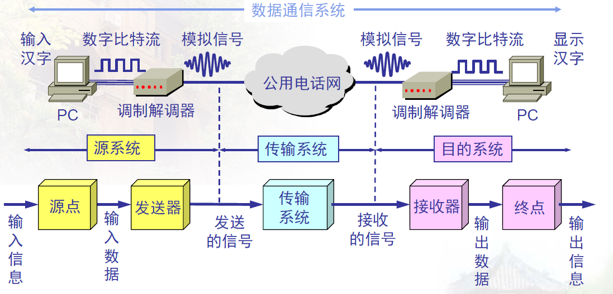
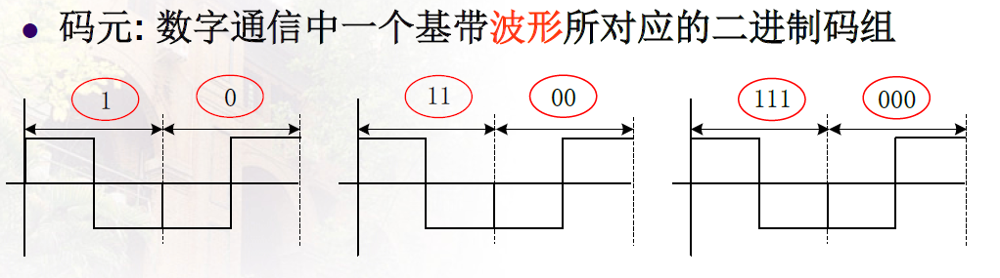
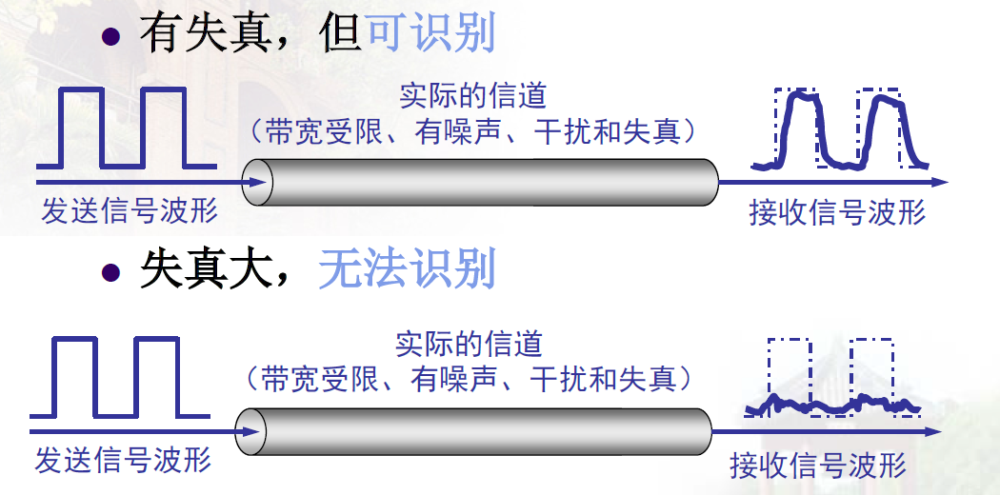
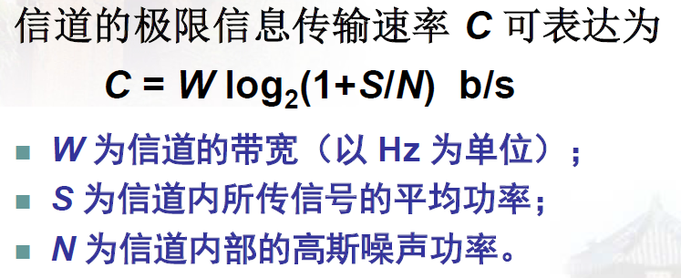
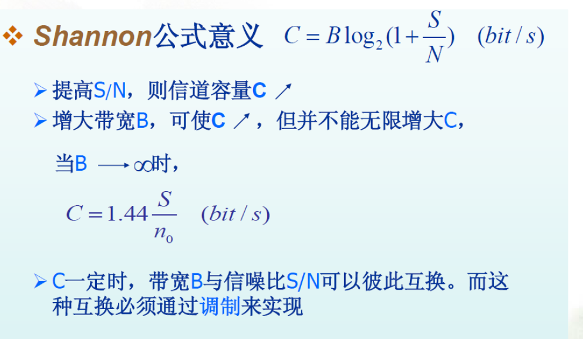
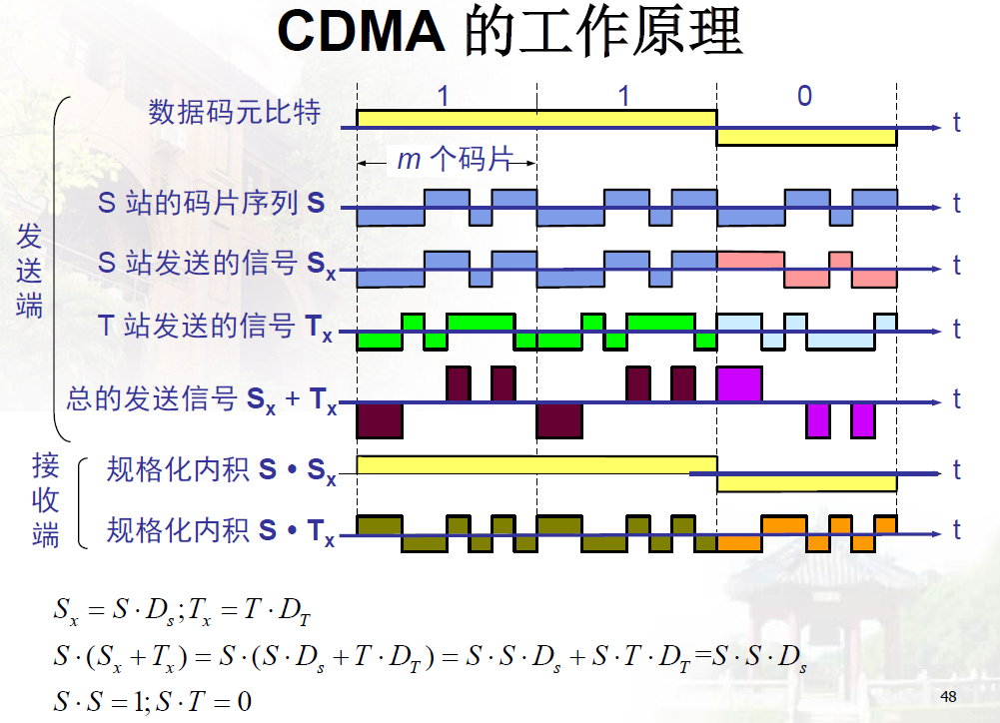

这里主要放一些关于计算机网络-协议栈中物理层的相关笔记.
参考自谢希仁<计算机网络>
1 物理层的基本概念
作用
- 在连接各种计算机的传输媒体上传输数据比特流.
- 屏蔽硬件的差异,使物理层上面的数据链路层感觉不到差异
特性
- 机械特性:指明接口所用接线器的形状和尺寸,引线数目和排列,固定和锁定转置等
- 电气特性:指明在接口电缆的各条线上出现的电压的范围。
- 功能特性:指明某条线上出现的某一电平的电压表示何种意义。
- 过程特性:指明对于不同功能的各种可能事件的出现顺序。
2 数据通信的基础知识
2.1 数据通信系统的模型
一个数据通信系统可划分为三大部分:
- 源系统
- 传输系统
- 目的系统

根据信号中代表消息的参数的取值方式不同,信号可分为两大类
- 模拟信号-代表消息的参数的趋势是连续的
- 数字信号-代表消息的参数的取值是离散的
- 使用时域中的波形表示数字信号时,代表不同离散数值的基本波形称为码元
- 
2.2 信道的几个基本概念
- 信道:表示向某一个方向传送信息的媒体
- 带宽:信道最高信号频率-信道最低信号频率,单位是Hz
- 信道容量:信道能无错误传送的的最高比特率,bps
- 通信的双方信息交互的方式的分类
- 单向通信
- 双向交替通信
- 双向同时通信
- 基带信号需要通过带通调制,生成带通信号
- 来自信源的信号称为基带信号
- 基带信号往往含有较多的低频成分,许多信道是无法传输这种低频分量和直流分量的,于是就有了调制
- 调制的种类
- 基带调制(仅变换信号波形)
- 带通调制(使用载波,把基带信号的频率范围搬移到较高的频段,生成带通信号)
- 带通调制又分很多种:调幅,调频,调相,正交振幅调制
2.3 信道的极限容量
数字通信优越性:接收端只需要从失真的波形识别出原来的信号,这种失真就对通信质量没有影响.

影响码元传输速率的因素
- 信道能够通过的频率范围
- 理想条件下(无噪声干扰),避免码间串扰,码元传输速率的上限值由奈氏准则得出
- 信噪比
- 带宽受限且有高斯白噪声干扰的信道的极限,无差错的信息传输速率由香农公式得出
- 

3 物理层下面的传输媒体
导引型传输媒体
- 双绞线
- 同轴电缆
- 光缆
- 多模光纤
- 单模光纤
非导引型传输媒体
- 短波通信
- 微波通信
4 信道复用技术
频分复用,时分复用,统计时分复用
波分复用
码分复用
重点掌握CDMA,码分多址技术TODO:
